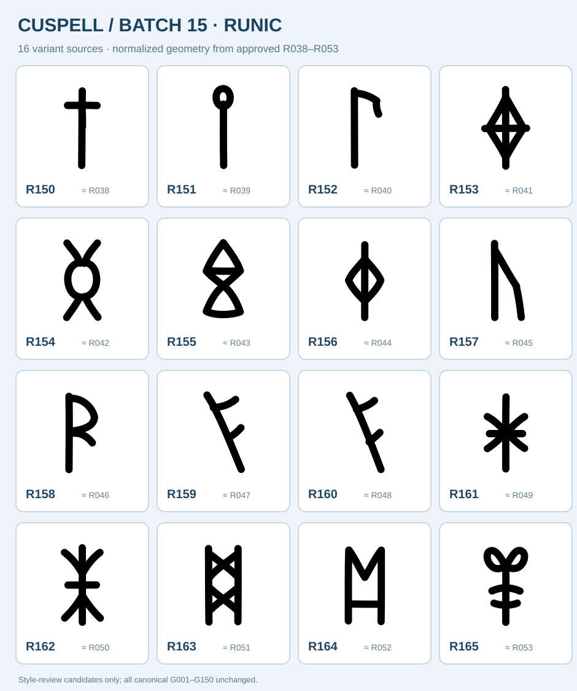
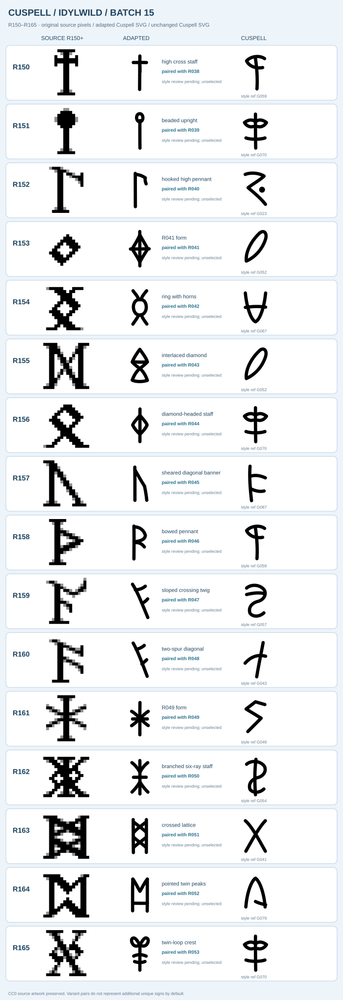
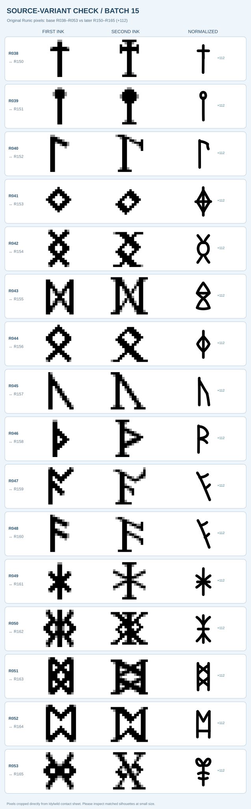

Editable normalized SVGs follow previously approved R038–R053 contours. Style approval and inventory selection remain open. The source comparison shows actual original PNG pixels side by side.
Adapted overview

Original / Adapted / Existing Cuspell

Original source variant pairings
